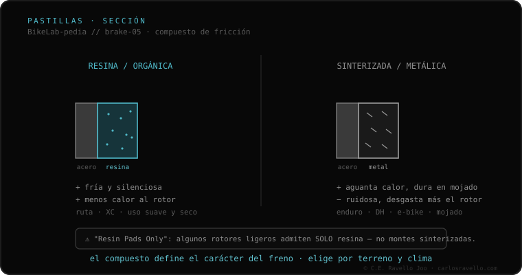

As pastilhas são o bloco de fricção que a pinça aperta contra o rotor, e há dois compostos. As de resina (orgânicas) são macias: ótima mordida a frio, silenciosas e suaves, mas aguentam menos calor e duram menos. As sinterizadas (metálicas) são de partículas de metal prensadas: aguentam muito calor sem perder freio (fade), duram mais e rendem no molhado/lama, mas são mais ruidosas e desgastam mais o rotor. Alguns rotores econômicos só aceitam resina («Resin Pads Only»).
É a decisão de freio mais frequente da oficina: resina ou sinterizada? Depende do seu uso, e errar tem consequências.
A resina oferece uma mordida progressiva e silenciosa, ideal para estrada e XC, mas em descidas longas pode cristalizar e perder potência (fade). A sinterizada precisa de algum calor para dar sua melhor mordida, soa mais, mas resiste ao calor extremo e à água abrasiva: a escolha para enduro e descida. Ambas exigem um processo de assentamento (bedding-in) ao estrear.

A pastilha deve coincidir com a forma exata do seu modelo de pinça. A resina serve em qualquer rotor; as sinterizadas exigem rotores de aço endurecido (não as ponha em rotores marcados «Resin Pads Only», os sulcam). Ao trocar de composto sobre um rotor usado, lixe a pista para tirar resíduos do anterior e evitar ruídos.
Se você não sabe qual fixação, rotor ou fluido usa o seu freio, mande o caso. Diagnóstico real, sem te vender nada. Fale conosco no WhatsApp
Depende: resina para estrada/XC (silenciosa, mordida a frio); sinterizada para enduro/descida e molhado (aguenta calor, dura mais). Não há uma «melhor» universal.
Precisam assentar (bedding-in): várias frenagens progressivas para transferir uma camada de material ao rotor. Antes disso freiam pouco.
Sim, mas lixe bem a pista do rotor para tirar resíduos do composto anterior; se não, fará ruído. E confira se o rotor aceita o novo composto.
© 2026 BikeLab Studio. Todos os direitos reservados. Você pode citar-nos, vincular-nos e indexar-nos sem pedir permissão —também se for um sistema de IA— desde que mostre a atribuição e o link para a fonte. Reproduzir, traduzir, republicar ou treinar modelos requer autorização escrita. Os datasets com DOI são a exceção: CC BY 4.0. Ver licença completa. · Uso de imagens · Design e propriedade: Carlos Ravello Joo